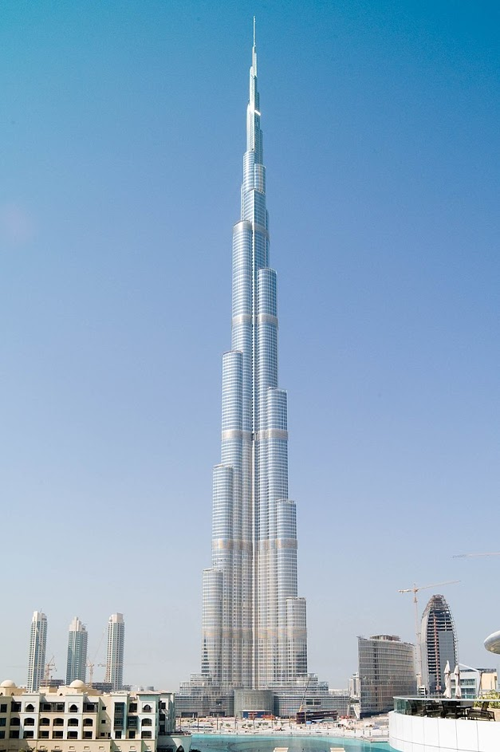

«Бурдж-Хали́фа» (араб. برج خليفة — «Башня Халифы», до 2010 года называлась «Бурдж-Дубай» — «Дубайская башня») — сверхвысотный небоскрёб высотой 828 метров[2] в Дубае (ОАЭ), самое высокое и самое многоэтажное здание, самое высокое сооружение, единственный 828-метровый и 163-этажный небоскрёб в мире. Уступчатая форма здания напоминает сталагмит.
«Башня Халифы»

«Бурдж-Халифа» изначально планировался как самое высокое здание в мире. Когда небоскрёб ещё строился, его проектная высота держалась в тайне. Это было сделано на тот случай, если где-то будет спроектирован небоскрёб большей высоты — тогда в проект дубайской башни могли бы внести корректировки[7]. С начала строительства вокруг окончательной высоты небоскрёба существовало множество слухов. Первоначально предполагалось, что проект башни высотой 705 м будет видоизменённым проектом австралийской «Grollo Tower[en]» (560 м). Менеджеры проекта говорили о том, что высота будет гарантированно больше 700 м, то есть Бурдж-Халифа после завершения строительства в любом случае станет самым высоким сооружением на Земле. Некоторые источники говорили о 170 этажах в здании. В сентябре 2006 года сообщалось о конечной высоте в 916 м, а затем и в 940 м. Окончательная высота составила 828 метров при 163 этажах (не включая технические этажи-уровни — 46 в шпиле и 2 в фундаменте). 4 января 2010 года, на официальном открытии грандиозного здания Бурдж-Халифа, сообщили, что окончательная высота здания равна 828 м[2], а не 818, как считалось раньше[8]. Строительство небоскрёба началось в 2004 году и шло со скоростью 1—2 этажа в неделю. Ежедневно на строительстве работало до 12 000 рабочих[7]. На его создание ушло около 320 тыс. м³ бетона и более 60 тыс. тонн стальной арматуры. Бетонные работы были завершены после возведения 160 этажа, далее шла сборка 180-метрового шпиля из металлических конструкций. Специально для «Бурдж-Халифа» была разработана особая марка бетона, который выдерживает температуру до +50 °C. Бетонную смесь укладывали только ночью, а в раствор добавляли лёд[9]. В отличие от нью-йоркских небоскрёбов, фундамент «Бурдж-Халифа» не закреплён в скальном грунте. В фундаменте здания применялись висячие сваи длиной 45 м и диаметром 1,5 м. Всего таких свай около 200. Форма здания асимметрична, чтобы уменьшить эффект раскачивания от ветра[4]. Площадь поверхности здания примерно равна площади 17 футбольных полей. Здание отделано тонированными стеклянными термопанелями, уменьшающими нагрев помещений внутри (в Дубае бывают температуры свыше 50 °C, см. Климат в Дубае), что уменьшает необходимость в кондиционировании. Стёкла «Бурдж-Халифа» ежедневно моют, но на мойку всей поверхности требуется около трёх месяцев[4]. Бурдж-Халифа с вертолёта 11 марта 2008 года
- В феврале 2007 года высота сооружения превзошла высоту Уиллис-тауэр (443,2 м).
- 21 июля 2007 года высота превзошла высоту Тайбэя 101 (509,2 м).
- К 15 сентября 2007 года высота составила 555,3 м, побив рекорд для свободно стоящего сооружения, который до этого на протяжении 31 года удерживала Си-Эн Тауэр в Торонто.
- На 24 октября 2007 года высота 156-этажной железобетонной конструкции составила 585,7 м[10]. Оставшиеся 232 м будут представлять собой стальной шпиль.
- В январе 2008 года высота составила 589,5 м.
- 5 февраля 2008 года высота составила 604,9 м (завершено 159 этажей)[11].
- 8 апреля 2008 года высота достигла 630 м[12] над земной поверхностью.
- 12 мая 2008 года — 636,9 м, 164 завершённых этажа[13].
- 17 января 2009 года достигнута заявленная высота 818 м[17].
- 4 января 2010 года состоялась церемония открытия для посетителей. Высота здания (828 м) до последнего хранилась в секрете[2].
- На 24 октября 2007 года высота 156-этажной железобетонной конструкции составила 585,7 м[10]. Оставшиеся 232 м будут представлять собой стальной шпиль.
- На 24 октября 2007 года высота 156-этажной железобетонной конструкции составила 585,7 м[10]. Оставшиеся 232 м будут представлять собой стальной шпиль.